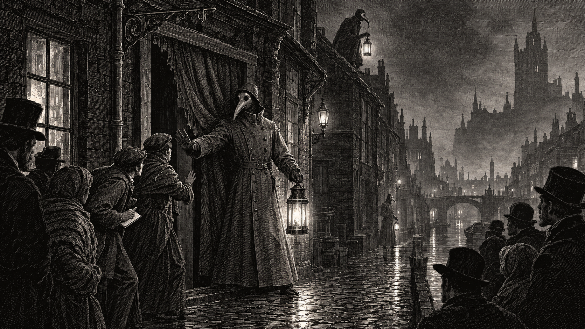
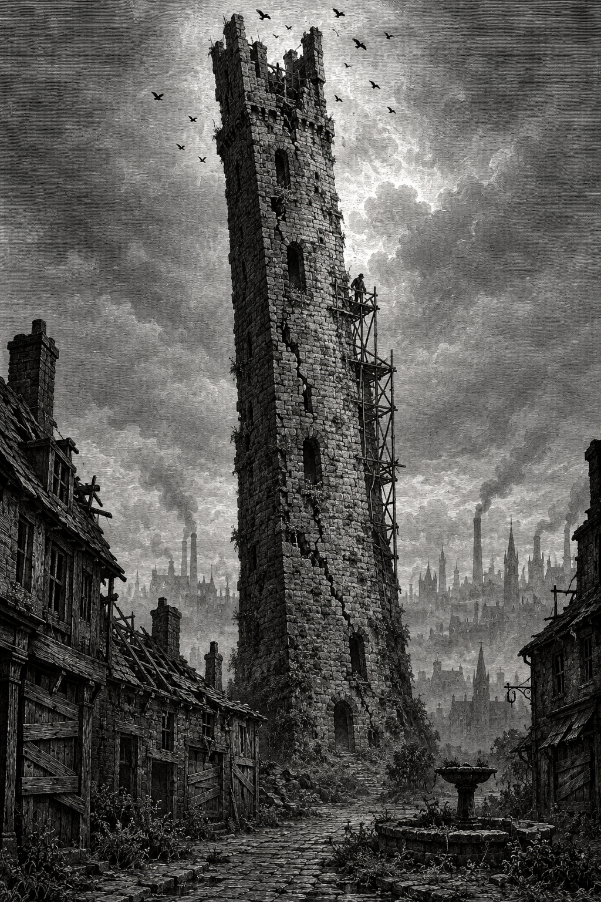

A Spirit Warden bars the door of the Amber Curtain, Lantern Row, Silkshore, where the body was found, as sketched by our artist at the scene. The house has since reopened.
On the morning of the 3rd, the body of an unknown man was found in a back room of the Amber Curtain, a licensed pipe-house on Lantern Row, Silkshore. He had been dead some hours, of an excess of the house’s product by every appearance. He carried no papers. He was, by the account of the housekeeper who found him, “naked as the day, near enough. Somebody had him out of his clothes before we ever drew the curtain.”
A dead man in a Silkshore pipe-house is not, in the ordinary way of things, news. They happen. The district has a custom for them, the Bluecoats have a form for them, and by noon the room is let again. This paper would not have given the matter a line — were it not for two things that are not ordinary at all.
The first is that the man’s last hours were not quiet. Staff and neighbors describe a disturbance in the house in the small hours — raised voices, a door forced, a scuffle in the halls — that was over before anyone thought to send for help. No one has been able to tell us who was involved, or what they wanted. Whoever they were, they were gone by dawn. So, it seems, were the dead man’s clothes.
The second is who came for the body. Not the Bluecoats alone, but the Spirit Wardens themselves — masked, lanterned, and in number — who sealed the room, removed the remains before the district had properly woken, and questioned the staff at length. The Wardens’ charge is the dead who will not stay dead: ghosts, possessions, the proper burning of the corpse. A plain death by the pipe concerns them no more than a fall from a ladder. Why, then, did they come in force for this one?
This paper can offer one answer, and we offer it carefully. If the dead man was himself a Warden — off duty, out of his grey, or in it — then the clothes taken from his body may have included a Warden’s field coat and mask. And that would mean a Warden’s uniform is now loose on the streets of Doskvol. Asked directly whether the dead man was one of their own, the Spirit Wardens declined to comment. The Ministry of Preservation referred us to the Spirit Wardens.
Consider what that uniform is. The grey coat and mask open doors no key will. The wearer may enter any house where there has been a death, take custody of any body, pass the crematorium gates at Bellweather, and order a Bluecoat aside without explaining why. No citizen questions a Warden. That is the point of the grey. In the wrong hands, it is the most dangerous garment in the city.
A Note on Borrowed Authority
The grey coat means something in this city. It means the dead will be kept in their place, and that someone with the authority to do so is seeing to it. If one of those coats has gone missing from a nameless corpse in Silkshore, the public is entitled to know it — and to ask who is wearing it now.
We will be asking.
Every child in Doskvol can point to one of the six old towers. We have stopped seeing them. It is time we looked again.
Nobody knows who built them. The Ministry of Preservation holds no plans and no record of their raising; the oldest deeds in the city treat them as already standing. Each once bore a family’s name. Only one still does: Tower Dalmore.
“The mortar’s gone to sand,” a retired Ministry surveyor told this paper. “By any sum I know, they’re standing on nothing.” What holds them up? “Ask the man who keeps patching them.”
We found him up a scaffold, mixing mortar by lantern light: squat, broad, leathery, with formidable sideburns and a brown bowler hat with a spanner skewered through the crown. Asked who pays him, he said “Bugger off,” and went back to work.
Six towers, no builders, and one man in a bowler hat holding up what the arithmetic says cannot stand. Ask yourself how long “too long” is.

One of the city’s six old towers, sketched by our artist from the street below. Note the scaffold — and the man on it.